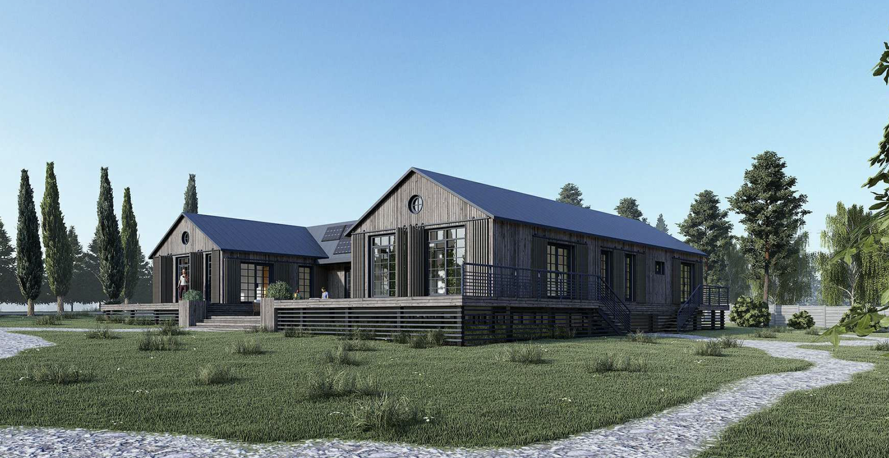

web developer || service designer || accessibility advocate
I'm Yusti. I create behaviour-change projects that inspire and educate
to move us all closer to a sustainable and fair future. I'm a big proponent
of user experience, accessibility, and content design. Outside of work, I love
spending time in nature, teaching yoga, and taking photos.
The outdoors
I looove SUPing & snorkeling, snowboarding, and climbing.
Here's a video about our most recent trip to the Alps:
And here's a video from one of our favourite beaches in France:
Sustainability
Since 2017, I've been working on reducing my waste, limiting carbon-heavy
travel, and have completely changed my shopping habits. Since then, I've
worked on dozens of sustainability-related projects in Switzerland, France,
and Russia. Before the war in Ukraine, our plan was to build an eco house made of straw
in Russia.
Here's what it was going to look like:

but that had to change, and now we're renovating an old stone
house in the south of France.
Here's a few fun facts about our project:
Photography
Lastly, I also enjoy taking photos of people and nature.